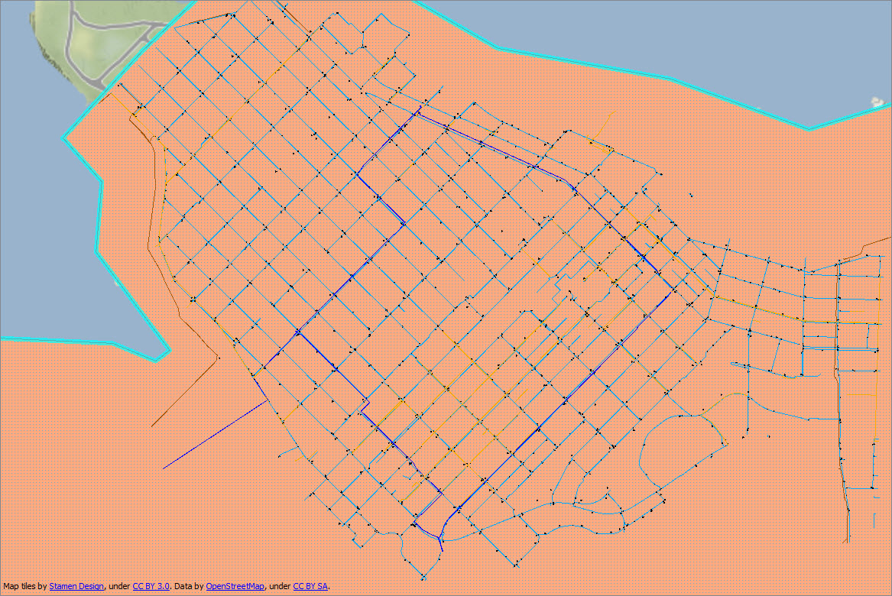
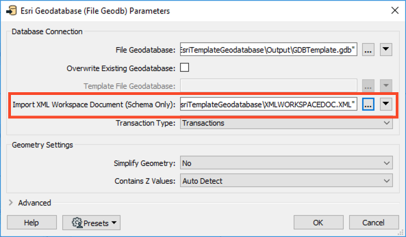
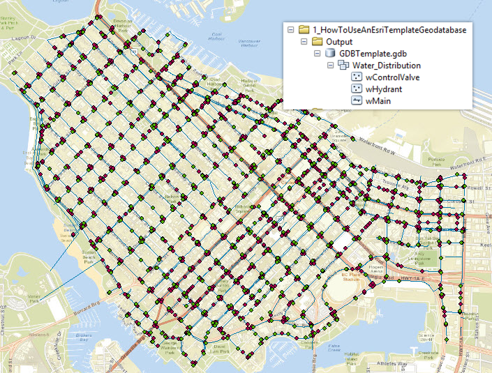
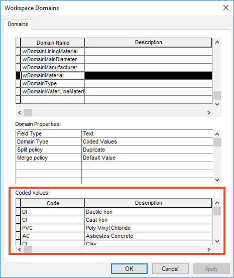

After completing this lesson, you’ll be able to:
This lesson's exercise uses the Esri Geodatabase (File Geodb) reader/writer, which requires a licensed version of ArcGIS. For more information on required ArcGIS license levels, please see Required ArcGIS License Types for FME Geodatabase Formats.
This lesson will show you how to use an Esri template in FME. While FME has the ability to create most attributes of a geodatabase, it is strongly recommended to use the native client ArcGIS to do so.
The exercise will demonstrate how domains and subtypes created inside ArcGIS can be applied to features using FME. By creating ‘the Geodatabase structure’ inside of ArcGIS, the user ensures the most efficient method of migrating or updating data is followed, requiring minimal modifications.
An Esri template is a file that maps FME output to a desired schema or structure. The template can either be an XML Workspace Document or a file geodatabase (.gdb). This template will allow FME to create the geodatabase structure with a complete schema, including subtypes, domains, relationships, network information, and annotation symbols.
As stated above, there are two types of Esri templates: a file geodatabase (.gdb) or an XML Workspace document. A file geodatabase is an existing geodatabase with a pre-defined structure, containing data or not. An XML Workspace document is a simple XML document that contains the definitions of the originating geodatabase. This document contains the schema and possibly the data. When FME uses an XML workspace document, it will only import the schema regardless of whether the data is attached to the document or not.
ArcGIS Desktop
To create an XML Workspace document, you have to open view the geodatabase in Catalog view (either ArcCatalog or ArcMap will work, or ArcGIS Pro) and right-click the geodatabase > export > XML Workspace Document (export the schema only). This allows the user to determine if the XML document will contain the schema or both the schema and data.
ArcGIS Pro
For ArcGIS Pro, creating an XML Workspace Document differs slightly. Rather than right-clicking and exporting a document, a tool is required. This can be found under Analysis Tab > Tools > Toolboxes tab > Data Management Tools > Distributed Geodatabase > Export XML Workspace Document. After running the tool, ArcGIS Pro will create a template.
The main reason to use a template is for simplicity. While FME can create the geodatabase structure, it requires more upkeep between translations. If you want to create a geodatabase output using a predefined schema, using an XML Workspace Document or a copy of a file geodatabase is easiest.
This method also ensures that the workspace does not have to be modified extensively to apply updates to the output. This is because the process for creating and applying domains in FME differs. To create domains or subtypes with FME, attribute parameters are set as the type domain/subtype_codes. This method works for the initial data translation, meaning the translation where the output is first created. All proceeding translations to that same output would require the workspace to be altered. Rather than having the data type set as coded_domain/range_domain or subtype_codes, the type would need to be altered to the default fields corresponding data type, for example, 'char' or 'double.' Once the geodatabase has been created, the workspace would need to be altered to apply all future updates.
For this example, we will be looking at the City of Vancouver Water and Sewer infrastructure. The data we will be focusing on consists of Control Valves, Hydrants, and different classifications of water mains (Abandoned, DFPS, Distribution, and Transmissions mains). We will be looking at the mains' Materials, Diameter, Life Cycle Status, and Lining domains. The domains and their possible values for each are as follows:
Domain Name: wDomainMainMaterials
| Ductile Iron | Cast Iron | Wood | Galvanized |
| High Density Polyethylene | Poly Vinyl Chloride | Asbestos Concrete | Concrete |
| Steel | Clay | Copper | Unknown |
| Other |
Domain Name: wDomainMainDiameter
| 20 | 25 | 30 | 40 | 50 | 65 | 75 | 100 |
| 150 | 200 | 250 | 300 | 350 | 400 | 500 | 550 |
| 600 | 675 | 700 | 750 | 775 | 800 | 850 | 900 |
| 1000 | 1050 | 1200 | 1350 | 1500 | 1800 | 1900 |
Domain Name: wDomainLifecycleStatus
| Proposed | Active |
| Removed | Abandoned |
Domain Name: wDomainLiningMaterial
| Cement Lined | CENT |
| Coal Tar | Epoxy |

1. Open Workspace in FME Workbench
Download HowToUseAnEsriTemplate.zip and extract it.
Open TemplateWorkspaceStart.fmwt in FME Workbench (2021.1 or later).
Inside the workspace, you will see AttributeManager transformers connected to each reader feature type. These are used to map domains to their corresponding reader feature correctly.

This image shows the Control Valves CAD features with attributes mapped to the correct output field and domain definition.
The 2DForcer attached to the water main and hydrant feature features ensures the features are two-dimensional.
The AttributeValueMapper transformers attached to the water main features map the corresponding feature to the domains. In this case, the first AttributeValueMapper maps the source values to the correct domain for Materials. The second AttributeValueMapper maps the source values to the correct domain for the Lining attribute.
2. Add a Writer to the Workspace
There are two different methods of adding a writer to the canvas to use the correct schema: an XML Workspace Document or a file geodatabase template.
Add an Esri Geodatabase (File Geodb) writer to the canvas. Next, select a location and name (e.g., GDBTemplate) for the future geodatabase. Set the Feature Class or Table Definition to Import from Dataset. Then click Parameters.

For Import XML Workspace Document (Schema Only), select the XML Workspace document provided (XMLWORKSPACEDOC.XML).

Click OK twice.
When the Import Writer Feature Types Dialog appears, set the Format to Esri Geodatabase (XML Workspace Document) and the Dataset to the provided XML workspace document. Click OK.

When the Select Feature Types Dialog appears, Select All, then click OK.

Add an Esri Geodatabase (File Geodb) writer to the canvas and select a location and name for the future geodatabase. Set the Feature Class or Table Definition to Import from Dataset. Then click Parameters.

In the parameters dialog, enable Overwrite Existing Geodatabase, set the Template File Geodatabase to the provided SourceGeodatabase.gdb, and click OK twice.

In the Import Writer Feature Types dialog, set the Dataset to the source template (the provided SourceGeodatabase.gdb), then click OK.

When the Select Feature Types Dialog opens, click Select All and then OK.

3. Map Input Features to Output Features
Connect the Control Valve features from 2DForcer_3 to the wControlValve writer feature type; the Hydrants features from 2DForcer_2 to the wHydrant writer feature type; and the four different main features from the AttributeValueMapper_2 to the wMain feature.
Now we need to map a few attributes manually. Expand the 2DForcer_2 as well as wHydrant. For wHydrant, manually map ASSET_NUMBER to FacilityID, and OFFSET_FROM_VALVE_M to LocationDescription by clicking and dragging from the arrows.

Then, for wMain, manually map DIAMETER_MM to Diameter.

4. Save and Run the Workspace.
Save then workspace and then run it. FME creates a new geodatabase complete with the attached schema. View your results using ArcMap.

Check the wMain, wHydrant, and wControlValve features to ensure the domains are present.
